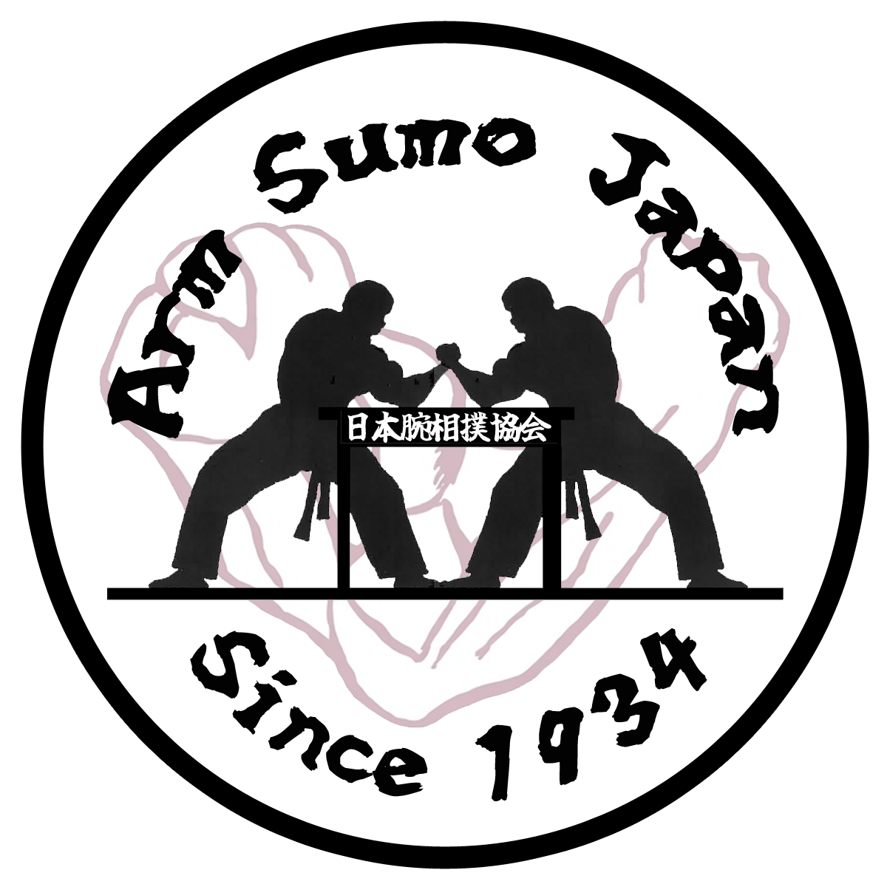
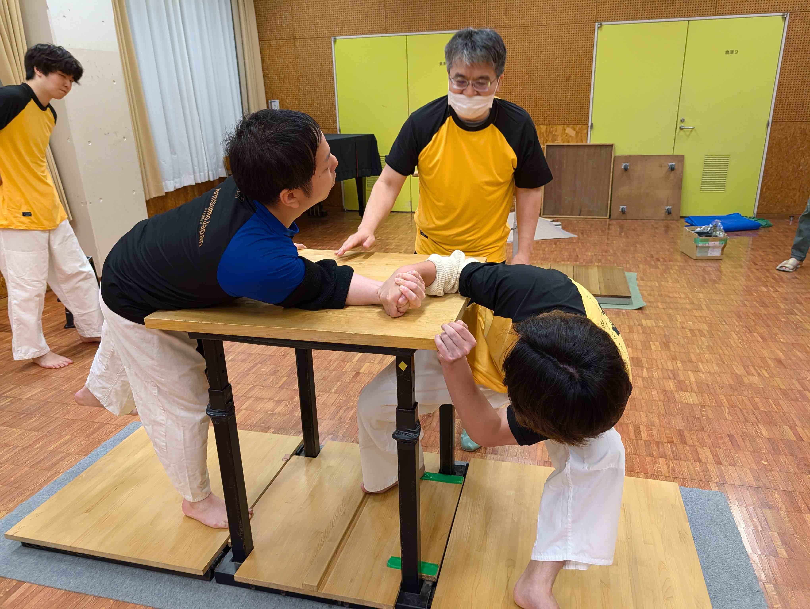
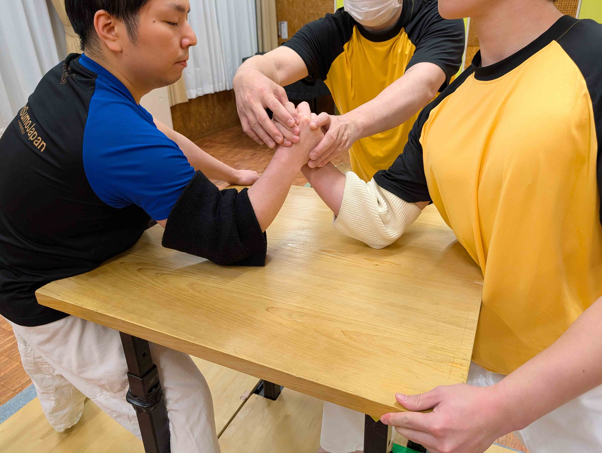
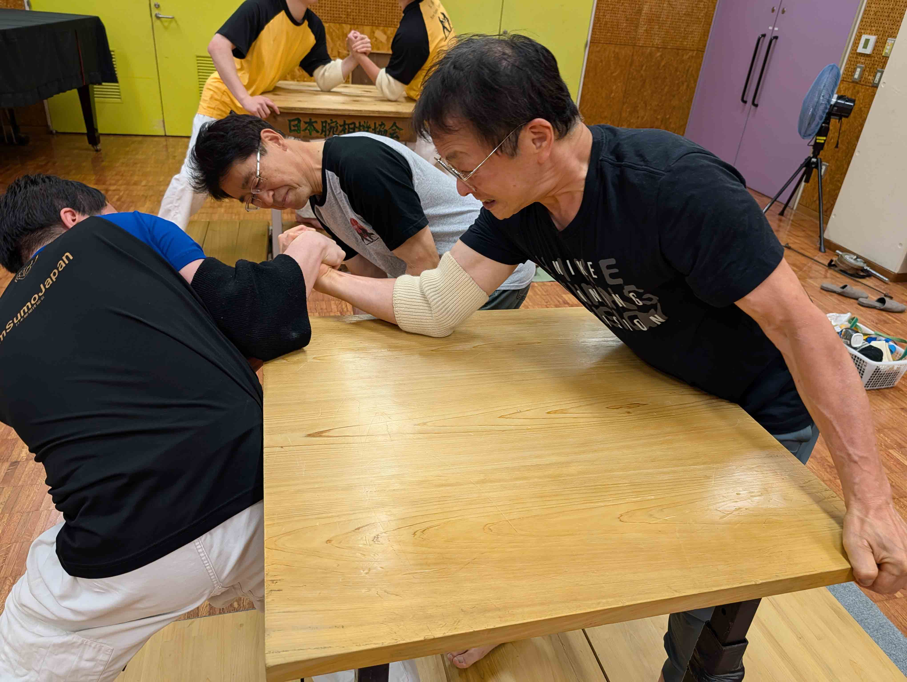

日本腕相撲協会単なる力比べではありません。 技術・駆け引き・精神性を競う、 日本独自の伝統競技です。
一般的な腕相撲は、 肘を固定した状態で行われますが、 本協会の腕相撲は、 肘を自由に動かす 独自ルールによって行われます。
そのため、 単純な力だけではなく、 スピード・タイミング・体重移動・技術が 勝敗を左右します。
また、 腕だけでなく、 全身を使うため、 非常に運動量の多い競技となっています。
さらに、 日本腕相撲協会には、 四十八手 とも呼ばれる多彩な技術体系が存在し、 攻防における駆け引きが 競技の魅力となっています。

一瞬の判断とタイミングによって、 勝敗が決まるスピード感あふれる競技です。

足腰・体幹・重心移動など、 身体全体を使うスポーツです。

四十八手に代表される、 日本独自の高度な技術体系があります。
「勝つことは目標であって目的ではない」
礼節を重んじ、
継続を尊び、
人との和を大切にすること。
それが、
日本腕相撲協会の理念です。